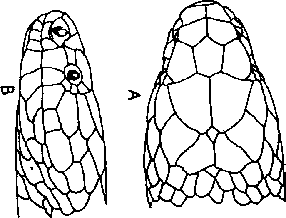

|
Digitized Inventory of Animal Resources: Reptilia ( Snakes ) Principal Investigator: Dr. R. J. B Alfred, Co-Investigator: Dr. Rama Krishna, Contributed by:
Dr. R.C.Sharma |
Ophiophagus hannah (Cantor 1836)
Taxonomic
Details
----- Scientific Name
----- Classification
----- Synonyms
----- Common Names
Other
Biological Details
----- Habit and
Habitat
----- Distribution
---------- Extent of
Occurrence
---------- Area of occurrence
---------- Altitude
---------- Population
-----
Conservation Status
-----
Diagnostic
Features
-----
Breeding system
Miscellaneous
Information
Literature
Genus Ophiophagus Gunther 1864.
This monotypic genus comprises the largest of the poisonous snakes reaching to a length of 4620 mm. and popularly known as King Cobra or Hamadryad. The main generic characters are : Maxillary bone extends anteriorly beyond the palatine; poison fangs are followed by 3 small solid teeth; neck can be expanded into a hood; eyes are moderately large, with a round pupil; loreal scale is not present; preocular is not in contact with the internasal; a pair of large occipital shields is in contact with each other behind the parietals; third supralabial touches the eye and the posterior nasal; nostril is large, bordered by the two nasals and the internasal; supralabials are 7, the 3rd and 4th touching the eye, and the 5th, 6th and 7th touching the lower anterior temporal; no cuneate shield is wedged in between any of the infralabials; body scales are smooth arranged obliquely; those of the 3 vertebral series are comparatively larger than the others; anterior subcaudal shields; anal shield is not divided i.e. it is entire. Genus includes only one species i.e. Ophiophagus hannah, Distributed in India, Burma, Vietnam, Thailand, Combodia, Southern China, Malaysia Malayan Archipelago and Philippines.
Scientific Name : Ophiophagus hannah (Cantor 1836)
Family :
Elapidae
Classification: Genus Ophiophagus Gunther 1864.
Synonyms:
Common Names: king
cobra or hamadryad
HABIT & HABITAT The snake is diurnal, very pugnacious and aggressive inhabits the rocky, bushy areas; grasslands; plain areas; dense forest; it is fond of water and can climb trees with a remarkable agility. Its main food consists of poisonous snakes like cobras, kraits and its own kind; it can devour other larger non-poisonous snakes and monitor lizards like Varanus salvator and Varanus bengalensis. Its breeding season starts in April and extends up to July; it is the only snake which makes a nest of leaves or twigs and 20-40 eggs are laid in a single clutch in the lower part of the nest and then it is completely plugged at the middle portion, the upper part of the nest is used by the female king Cobra, where she lies coiled up and guards the eggs, till these hatch out. The young at the time of birth measure 500-530 mm. in length.
Distribution: Gujarat
: Banaskantha (Deesa) district. Peninsular India to the Himalayas, Bengal,
Bihar, Orissa, Assam.
Altitude:
Conservation status: It is extremely vulnerable in certain parts of its range on account of large scale killing by man for its skin.
Besides the characters given under the genus, the characters of the species are : Dorsal colouration is yellow or olive-green or olive-brown or blackish-brown or completely black; generally with distinct yellowish or whitish cross-bars or chevrons on the body, which are narrower than the interval. Many individuals are with variegations in the posterior portion of the body including the tail; ventrum is with a uniform colour, with mottling or distinct bars; throat is generally with light-yellow or creamy colouration. The juveniles are jet black with distinct white or yellow cross-bars or chevron shaped markings on the body and the tail; head is with 4 distinct bars. Scales are smooth, in 17 or 19 : 15 : 15 rows; Ventral shields are from 215-270; subcaudal shields are 80-120; hemipenis is very long and deeply forked, extending to the 30th caudal plate or even beyond, forked opposite the fourth. The area at the bifurcating place has a few large, strong spines, the rest of the organ is flounced except the distal extremity, which is calyculate the sulcus lips are smooth.
Breeding Biology : Back to Top

Ophiophagus hqnnah (Cantor) : Head : A.
Dorsal view B. Lateral view